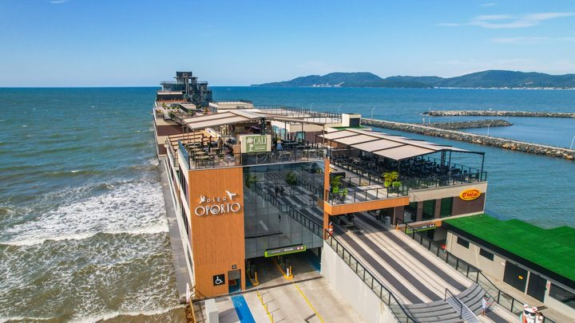
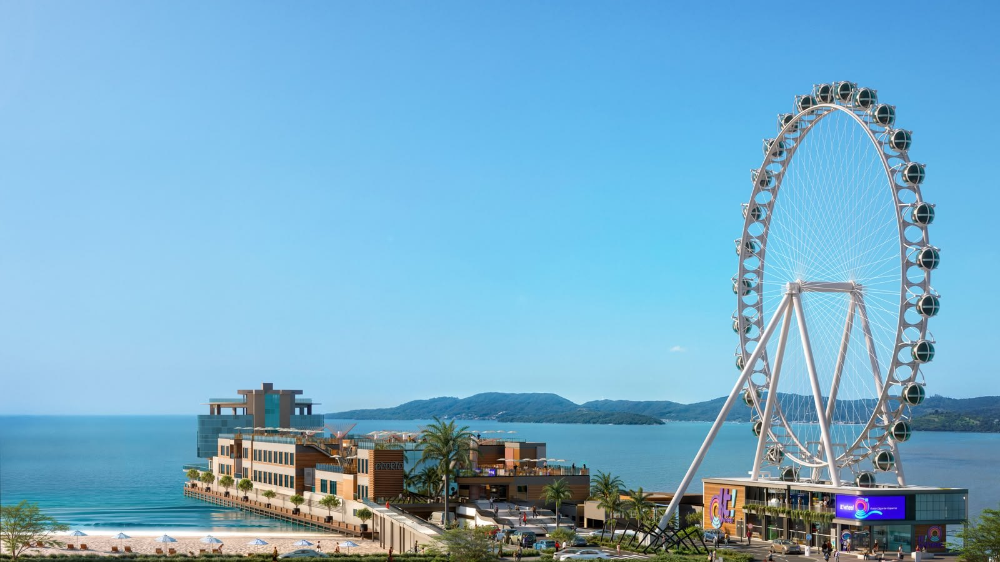
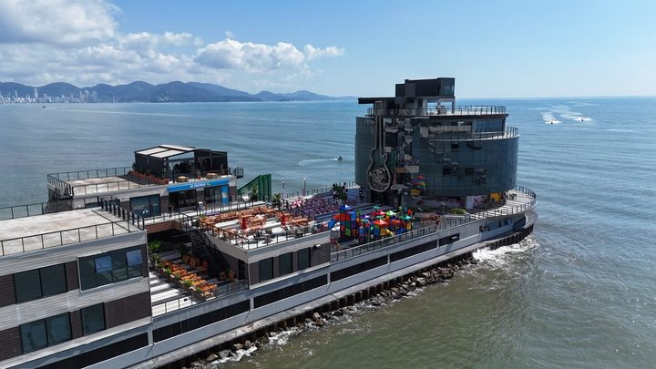

Itapema · Poder PúblicoA consulta da Câmara de Itapema deu 87,76% a favor de trocar o nome do píer, e o nome que sai teve 64% de aprovação em 2024
O píer onde a roda-gigante está sendo erguida.
O Sine de Itapema faz neste sábado, 3 de outubro, das 8h às 13h, uma seletiva para 69 vagas na It! Wheel, a roda-gigante que está sendo erguida na entrada do Píer Oporto. Nós abrimos uma por uma as nove vagas que a empresa publica no próprio portal de contratação. Elas somam 29 posições, sete trazem o salário em reais, de R$ 2.300 a R$ 4.000, e as nove, sem exceção, pedem experiência anterior.
Em 30 segundos · Modo de Leitura, formato original Santa Informa
O Sine de Itapema faz uma seletiva neste sábado.
É dia 3 de outubro, das 8h às 13h.
Na Rua 216, nº 155, sala 02, na Meia Praia.
Leve documento com foto e currículo.
São 69 vagas na It! Wheel.
A It! Wheel é a roda-gigante de Itapema.
Fica na entrada do Píer Oporto.
A inauguração está prevista para o fim deste semestre.
São 59 vagas de operação e 10 de manutenção.
Nós abrimos o portal de vagas da empresa.
Lá estão nove vagas publicadas.
Somadas, dão 29 posições, não 69.
As de manutenção batem certinho: 10.
As de operação aparecem como 18, e a nota fala em 59.
Tem ainda uma de assistente de compras, fora da nota.
Sete das nove dizem quanto pagam.
Atendente de operações: R$ 2.300.
Vendedor de operações: R$ 2.500 mais variável.
Manutenção predial: R$ 2.500.
Operador de caixa e bilheteria: R$ 2.750.
Assistente de compras: R$ 2.900.
Operador de roda-gigante: R$ 3.800.
Eletromecânico: R$ 4.000 mais 30% de periculosidade.
Supervisor e planejador não publicam valor.
Todas as nove pedem experiência anterior.
Nenhuma é vaga de primeiro emprego.
O contrato é CLT, presencial, escala 5x2.
A nota da Prefeitura fala em vale-refeição de R$ 42 por dia.
No portal da empresa o valor é R$ 40.
O salário mínimo de 2026 é R$ 1.621.
Então a menor vaga paga 1,4 mínimo.
E a maior, 2,5 mínimos antes do adicional.
EconomiaPublicada em Redação Santa Informa

O Sine de Itapema realiza neste sábado, 3 de outubro, das 8h às 13h, uma seletiva presencial para preencher 69 vagas de emprego na It! Wheel, a roda-gigante que está sendo erguida na entrada do Píer Oporto. O endereço é Rua 216, nº 155, sala 02, na Meia Praia, e quem for precisa levar documento de identificação e currículo. Nós abrimos uma por uma as nove vagas que a empresa publica no próprio portal de contratação: sete trazem o salário em reais, que vai de R$ 2.300, para atendente de operações, a R$ 4.000 para eletromecânico de manutenção, com adicional de 30% de periculosidade por cima. As outras duas não publicam número. E as nove, sem exceção, exigem experiência anterior.
Pela nota oficial, são 59 vagas na operação (três de supervisor, 10 de vendedor, 12 de operador de caixa e bilheteria e 34 de atendente) e 10 na manutenção (duas de operador de roda-gigante, duas de manutenção predial, cinco de eletromecânico e uma de planejador). O contrato é CLT, presencial, em escala 5x2 com duas folgas por semana, inclusive na alta temporada. Os turnos previstos para a maior parte dos cargos são das 8h40 às 18h04 ou das 12h às 21h24, e os contratados passam por um mês de capacitação remunerada antes de começar.
No portal da empresa, atendente de operações paga R$ 2.300 e pede de 6 a 12 meses de experiência. Vendedor de operações paga R$ 2.500 mais variável por metas, e oficial de manutenção predial, os mesmos R$ 2.500. Operador de caixa e bilheteria paga R$ 2.750 mais quebra de caixa, com um ano de caixa exigido. Assistente de compras paga R$ 2.900. Operador de roda-gigante paga R$ 3.800 e pede um ano em atrações. O teto publicado é o do eletromecânico de manutenção, R$ 4.000 com 30% de periculosidade, que exige curso técnico e dois anos de manutenção industrial ou de parques. Supervisor de operações e planejador de manutenção não trazem valor. Como régua, o salário mínimo de 2026 é de R$ 1.621: a vaga mais baixa paga 1,4 mínimo e a mais alta, 2,5.
Somando as posições de cada uma das nove vagas do portal, chegamos a 29. Na manutenção o número bate exato: 10 posições, as mesmas 10 da nota. Na operação a conta muda, porque o portal abre 18 posições onde a nota fala em 59. Há ainda uma vaga de assistente de compras, publicada em 2 de setembro, que não aparece na nota da Prefeitura. Outra diferença está no benefício: a nota informa vale-refeição de R$ 42 por dia e as vagas do portal trazem R$ 40. Nem a nota nem o portal explicam a diferença, e é por isso que a seletiva de sábado importa: ela é o caminho que a Prefeitura indica para as vagas de operação, que são a maioria.
O resumo de 30 segundos está no topo e a versão completa é o texto acima. Aqui ficam as três leituras da casa sobre o mesmo assunto.
Clara, a otimista
Sessenta e nove vagas de uma vez, com carteira assinada, plano de saúde sem desconto e um mês de treinamento pago antes de começar. Isso é notícia boa em qualquer cidade, e numa cidade de temporada é notícia muito boa, porque o emprego aqui costuma durar três meses e ir embora em março. A escala 5x2 vale inclusive no verão, o que sugere equipe fixa.
Gostei também de ver salário escrito. Sete das nove vagas dizem quanto pagam antes de a pessoa gastar o sábado numa fila, e R$ 3.800 para operar a roda-gigante é um valor que conversa com a responsabilidade do cargo. Quem trabalha em atração sabe que o botão que você aperta carrega gente.
Seu Prudêncio, o criterioso
Merece atenção a conta que não fecha. A nota fala em 69 posições, o portal publica 29, e a diferença toda está na operação. Pode ser etapa de divulgação, pode ser vaga que só abre depois, pode ser contratação direta na seletiva. O ponto é que quem vai para a fila no sábado não sabe qual dos três é, e vale perguntar isso no balcão antes de entregar o currículo.
Vale acompanhar também a exigência de experiência. As nove vagas pedem de seis meses a dois anos, e isso significa que esta não é a porta de entrada para o jovem de Itapema que procura o primeiro emprego. Uma sugestão útil: quem não tem o tempo pedido pode levar o currículo mesmo assim e perguntar sobre o banco de talentos, porque atração nova costuma repor equipe nos primeiros meses de operação. Outra: guardar o comprovante da experiência, já que vários anúncios usam a palavra comprovada.
Dito isso, reconheço o mérito do conjunto. Salário publicado, benefício listado, escala definida, treinamento remunerado antes do primeiro dia e contrato CLT formam um pacote melhor que a média do que se oferece no litoral em véspera de temporada. E a empresa colocou os valores por escrito, o que facilita a vida de quem decide se vale a pena ir até a Meia Praia num sábado de manhã.
Caco, o sarcástico
Itapema vai ganhar uma roda-gigante. Uma cidade que já sobe tanto, agora sobe também em cabine fechada e com ar-condicionado, girando devagar enquanto o trânsito da Nereu Ramos gira parado lá embaixo.
E tem vaga de operador de roda-gigante pedindo um ano de experiência em operação de atrações. Em Itapema. Deve ter uns três currículos assim na cidade inteira, e dois são de quem trabalhou no parquinho do Natal.
Agora sério, porque aqui tem coisa boa de verdade: o emprego de temporada no litoral costuma ser três meses de correria e depois tchau. Esse aqui é escala fixa, plano de saúde e treinamento pago antes de começar. Se a roda realmente girar o ano inteiro, Itapema ganha sessenta e nove empregos que não acabam em março. Aí pode girar à vontade.
Fontes: a data, o horário, o endereço da seletiva, as 69 vagas, a divisão entre operação e manutenção, a escala, os turnos, o mês de capacitação remunerada, o vale-refeição de R$ 42 e a previsão de inauguração estão na nota Sine de Itapema realiza seleção para 69 vagas na roda-gigante neste sábado (3), publicada pela Prefeitura de Itapema em 1º de outubro de 2026, de onde saiu também a projeção usada no topo. Os salários, os requisitos de experiência, o número de posições de cada cargo e o vale-refeição de R$ 40 são levantamento nosso, feito vaga por vaga no portal de vagas da It! Wheel, conferido nesta quinta-feira, com destaque para os anúncios de atendente de operações, eletromecânico de manutenção, operador de roda-gigante e supervisor de operações. O histórico do empreendimento com a Prefeitura está nas notas Últimos dias: inscrições para concurso cultural que vai escolher estampa da It! Wheel seguem até 31 de maio e Visita técnica ao Píer Oporto aproxima profissionais da hotelaria dos atrativos de Itapema, as duas da Prefeitura de Itapema. O salário mínimo de R$ 1.621 em 2026 está na reportagem Salário mínimo deverá subir para R$ 1.741 em 2027, da Agência Brasil.

Itapema · Poder PúblicoO píer onde a roda-gigante está sendo erguida.

Itapema · TurismoComo o nome do endereço chegou até aqui.
 Itapema · Turismo
Itapema · TurismoQuem é o público que a roda-gigante vai receber.